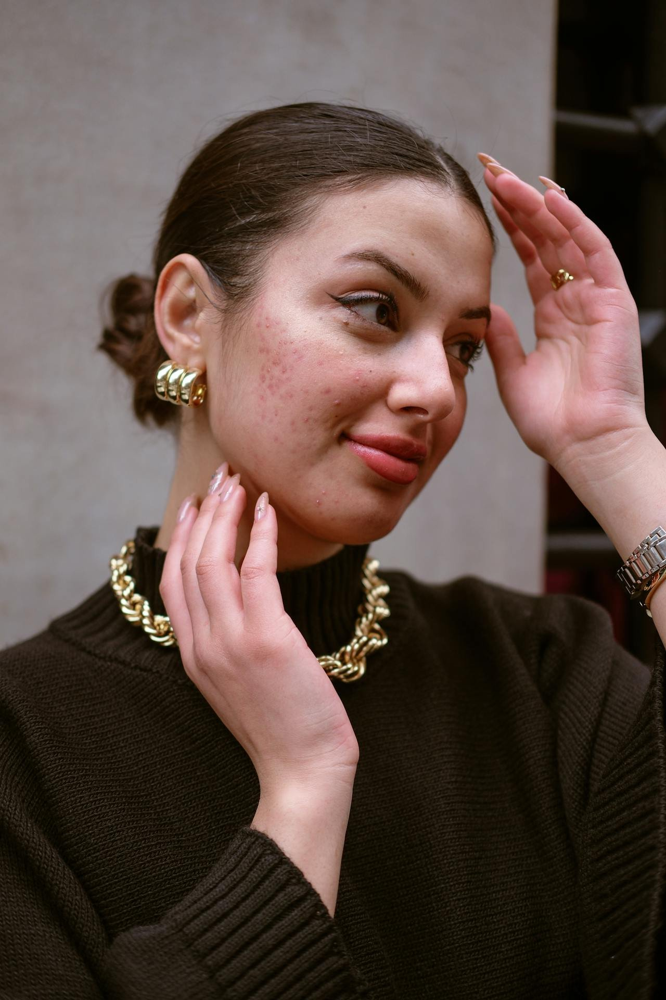

Fungal Acne is Fake

The term “fungal acne” is a ploy from Big Skincare to get you to spend money on things. The truth? Fungal acne isn’t acne at all. It’s just a really great imposter and one of the more confusing conditions clients may encounter on their skincare journeys. Since 2019, we’ve been educating the masses on the differences between acne vulgaris (commonly referred to as acne) and Pityrosporum (Malassezia) Folliculitis—a fungal infection that is not acne. Yet despite our efforts, we’re still seeing people make harmful decisions for their skin health based on the popularity of this misnomer across social media. If you think you may have “fungal acne” (you don’t) then read this post to learn what is really going on with your skin, what to do, and when to see a professional.
What is Fungal Acne Malassezia Folliculitis?
Before we get into what Malassezia folliculitis is, we have to explain what it is not. This means we have to first define acne. Acne is medically defined as a disorder of the hair follicles (AKA the pores) and sebaceous glands. A disorder is the result of internal dysfunction where a group of symptoms disrupts your normal body functions but does not have a known cause.
Malassezia folliculitis is a fungal infection of the hair follicles (AKA the pores, again) caused by an overgrowth of yeast that naturally lives on our skin. An infection is medically defined as a foreign organism (pathogen) invading the body and causing harm. It is the result of an external pathogen—meaning something that does not exist inside our bodies.
In the most simple terms, what you think is “fungal acne” is actually just a yeast infection on your face. But we don’t call it a yeast infection probably because we already associate yeast infections with vaginas (though men can get them too!).
Malassezia Yeast, Explained
If you’re thinking you must have come into contact with something bad or did a step wrong in your skincare routine to cause malassezia folliculitis, you didn’t. The yeast is a native to the skin’s microbiome. Malassezia plays several important roles when present in normal amounts. For example, it actually helps to balance oil production. By metabolizing sebum, the yeast helps prevent excessive oiliness while also producing byproducts that can help maintain our skin's protective barrier.
Some research suggests that Malassezia might also help protect our skin from other potentially harmful microorganisms by competing for resources and space on the skin's surface. This highlights why completely eliminating it isn't the goal when treating Malassezia-related conditions . Instead, the focus should be on restoring balance to the skin's microbiome.
However, like many microorganisms in our microbiome, problems only arise when the balance is disrupted and the yeast overgrows. It's similar to how our gut needs certain bacteria to function properly, but too much of even the "good" bacteria can cause issues. When Malassezia populations grow beyond normal levels, that's when we see conditions like Malassezia folliculitis develop.
How Malassezia Folliculitis Develops
This condition develops when certain circumstances create an ideal environment for the yeast to multiply beyond normal levels. The most common trigger is often environmental—hot, humid conditions combined with sweating create a perfect breeding ground for the yeast. This explains why many people experience flare-ups during summer months or in tropical climates, and why athletes or those who exercise frequently might be particularly susceptible.
The second most common trigger? Antibiotic use. When someone takes broad-spectrum antibiotics, these medications can disrupt the delicate balance of microorganisms on the skin, allowing the Malassezia yeast to overgrow unchecked.
Certain skincare habits can also impact the development of Malassezia, too. Being too heavy-handed with occlusives or using products that are rich in certain oils can essentially feed the yeast which, in turn, promotes its growth. Products that contain high amounts of coconut oil, olive oil, sunflower oil, argan oil, and jojoba oil would be prime suspects in causing an overgrowth of Malassezia.
Additionally, practices like not showering promptly after sweating, prolonging wear in sweaty clothes, or wearing tight, non-breathable fabrics can create the warm, moist environment that the yeast thrives in. Over-exfoliation or harsh skincare practices can damage the skin barrier, making it easier for the yeast to proliferate and cause problems.
Best Way to Treat Malassezia Folliculitis
You can’t treat Malassezia in the same ways that you would treat acne. Acne products will not work on malassezia because most acne products are anti-bacterial. Given that Malassezia is a yeast/fungal infection, you will need an anti-fungal approach.
For most mild-moderate cases of Malassezia folliculitis, you can use an over the counter (OTC) anti-fungal treatment for up to two weeks. If your problem persists beyond that time frame, you will want to stop use and consult a dermatologist. Anti-fungals that may be safe to use on the face include the famous anti-dandruff shampoos as face wash (Nizoral 1%, Selsun Blue, Head & Shoulders) and athlete’s foot cream as sleeping masks (Lotrimin, Lamisil). Please use with caution. You absolutely DO NOT want to get any of these products near your eyes or nose!
Mandelic acid is also a great ingredient to add to your routine if you have frequent bouts of Malassezia folliculitis. It is both anti-bacterial and anti-fungal so once you’ve made an initial correction of the yeast overgrowth, using mandelic acid in your routine can help manage the fungal activity in your skin’s microbiome. Mandelic acid is the star ingredient of our Majestic Acne Serums and our Exfoliating Power Wash.
Fungal Acne Isn’t Real
But Malassezia folliculitis is. Using the term "fungal acne" can be actively harmful because it may lead people to self-diagnose and treat their skin concerns incorrectly. Someone might use harsh acne treatments when they actually need antifungal medication, or vice versa. This can worsen the condition and delay proper treatment.
The perpetuation of this incorrect terminology also reflects a broader issue in skincare discourse: the oversimplification of complex dermatological conditions. When we casually rename medical conditions to make them sound more accessible, we risk losing important nuance that could affect treatment decisions.
Healthcare professionals and skincare educators have a responsibility to use precise, accurate terminology. Instead of saying "fungal acne," we should call it what it is: Malassezia folliculitis. This clarity helps people better understand their skin conditions and seek appropriate treatment.
And if you’re looking for an esthetician that knows the difference and can help clear your skin, book with us!